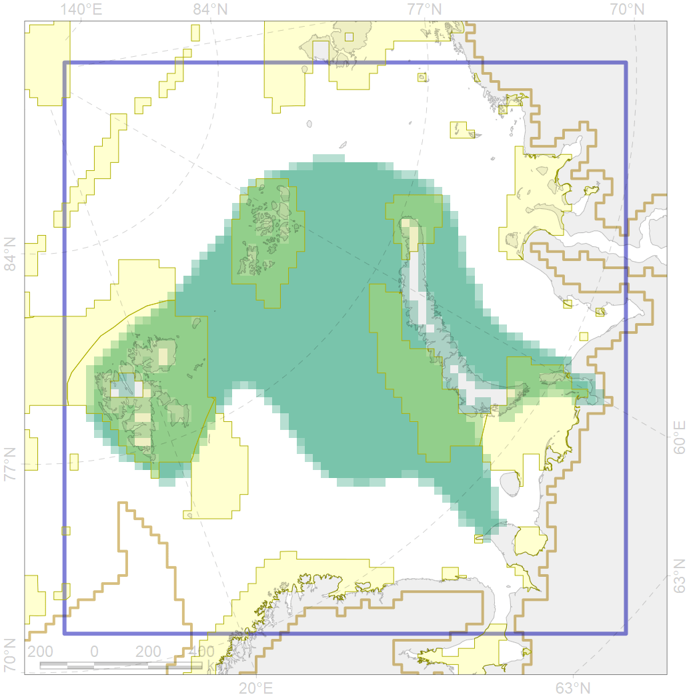
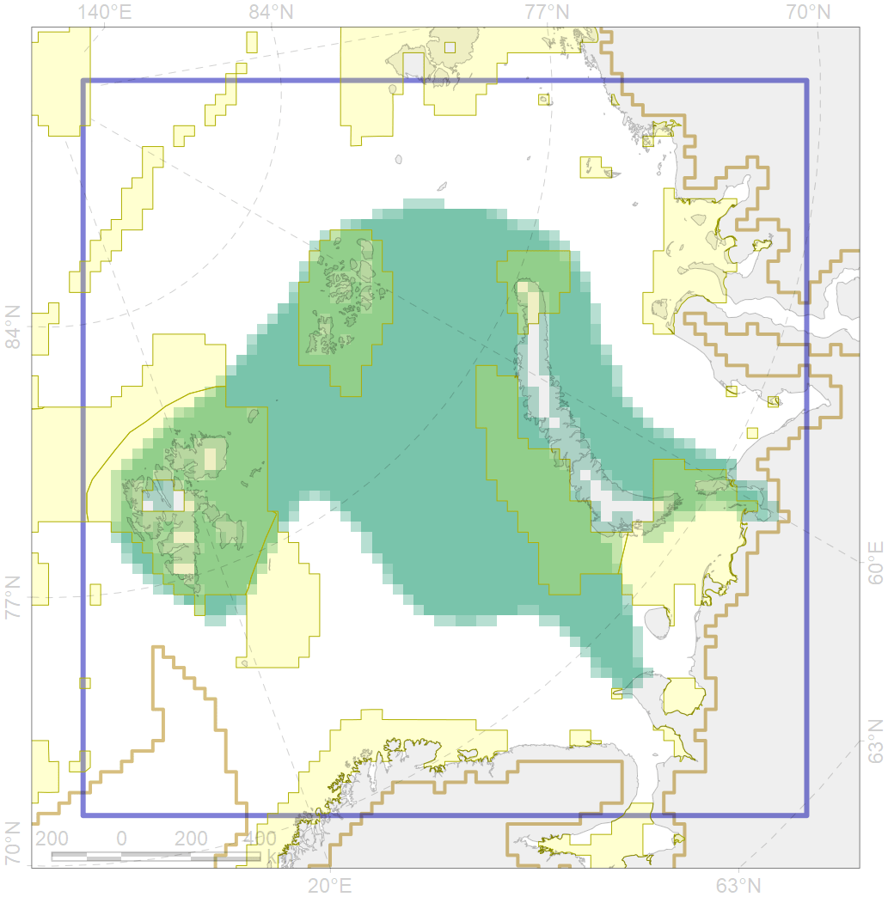

4038
 

| CF ID | 4038 |
| CF Name | Feeding area of the Polar cod in the Barents Sea |
| Time Period | 1980-2010 |
| Source(s) | Ajian et al., 2011 |
| Seasonality | April-November |
| Depth Horizon | usually 0-550 m, and pelagicaly above larger depth |
| Methodology | multiple source, published field data |
| Author Name | N. Chernova |
| Notes | |
| Conservation Target Set in the Scenario | 0.24 |
| Conservation Target Achieved in the Scenario | 0.332 (Scenario: 138.5%) |
| PAC ID | Proportion in the PAC | Contribution to ArcNet Target Achievement | PAC’s Contribution to the Achieved Target |
|---|---|---|---|
| 19 | 2.3% | 8.4% | 6.1% |
| 20 | 2.2% | 8.2% | 5.9% |
| 21 | 9.7% | 35.2% | 25.4% |
| 22 | 6.9% | 27.6% | 19.9% |
| 29 | 0.0% | 0.0% | 0.0% |
| 30 | 11.3% | 45.5% | 32.8% |
| 31 | 0.4% | 1.5% | 1.1% |
| inner | 32.8% | 126.4% | 91.3% |
| outer | 67.2% | 12.1% | 8.7% |